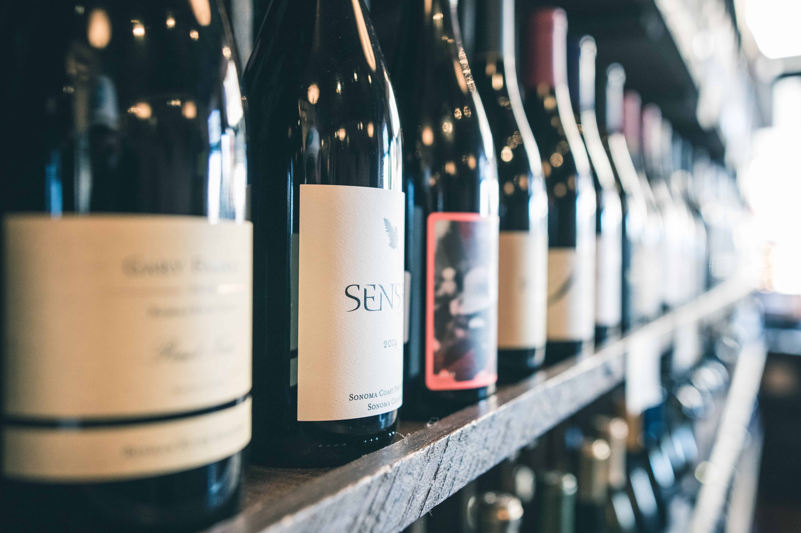

~ Drinks ~
Selected wines and crafty cocktails to complement your meal
* Sparkling Wine and Champagne *
Prosecco
Moet Chandon White
* White Wine *
Cakebread Sauvignon Blanc
Meiomi Napa Valley
Pouilly Fuisse Louis Jadot
* Red Wine *
Cherry Pie Pinot Noir
Chateauneuf-du-Pape Beaurenard 2015
Twenty Bench 2016 Cabernet North Coast
Santa Cristina Antinori Sangiovese
* Cocktails *
Pina Colada
Blue Hawaii
Mai Tai
Moscow Mule
Armaredo Sour